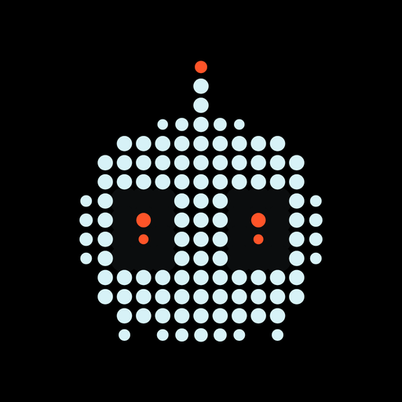

PRIVACY POLICY
TR4CE Blip ("Blip") is a desktop app that runs on your own computer. This policy explains what data Blip uses and where it goes. In short: your data stays on your computer and in your own Google account. The developer never receives it.
Data stored on your computer
Your notes, tasks, settings and calendar choices are saved in Blip's folder on your computer (%APPDATA%\com.tr4ce.blip). If you connect a Google account, the access tokens Google gives Blip are saved in the same folder. Uninstalling Blip and deleting that folder removes all of it.
Google account data
Connecting a Google account is optional. When you do, Blip asks Google for these permissions and uses them only for the features listed:
- Basic profile and email address (
openid,email): to show which account is connected. - Google Drive app data folder (
drive.appdata): to keep one sync file in a hidden folder that only Blip can see, so your notes and tasks match on your own computers. Blip cannot see any other file in your Drive. - Calendar list (
calendar.calendarlist.readonly): to let you choose which calendars appear in Blip. - Calendar events (
calendar.events): to show your events in Blip's agenda and to create or delete events when you ask it to.
All requests go directly from your computer to Google. Blip has no server of its own, and no Google data is sent to the developer or to anyone else.
What Blip does not do
- No analytics, tracking, advertising or telemetry.
- No selling, sharing or transferring of your data.
- No use of Google data to train AI or machine learning models.
Google API Services User Data Policy
Blip's use and transfer of information received from Google APIs adheres to the Google API Services User Data Policy, including the Limited Use requirements.
Removing access
Use "SAIR" / "SIGN OUT" in Blip's Google settings to disconnect an account and delete its tokens from your computer. You can also remove Blip's access at any time at myaccount.google.com/permissions. The sync file in your Drive app folder is deleted when you remove Blip's access in your Google Drive settings (Manage apps).
Children
Blip does not knowingly collect any personal information from children.
Changes and contact
If this policy changes, the new version will be published on this page with a new date. Questions can be sent through GitHub issues.